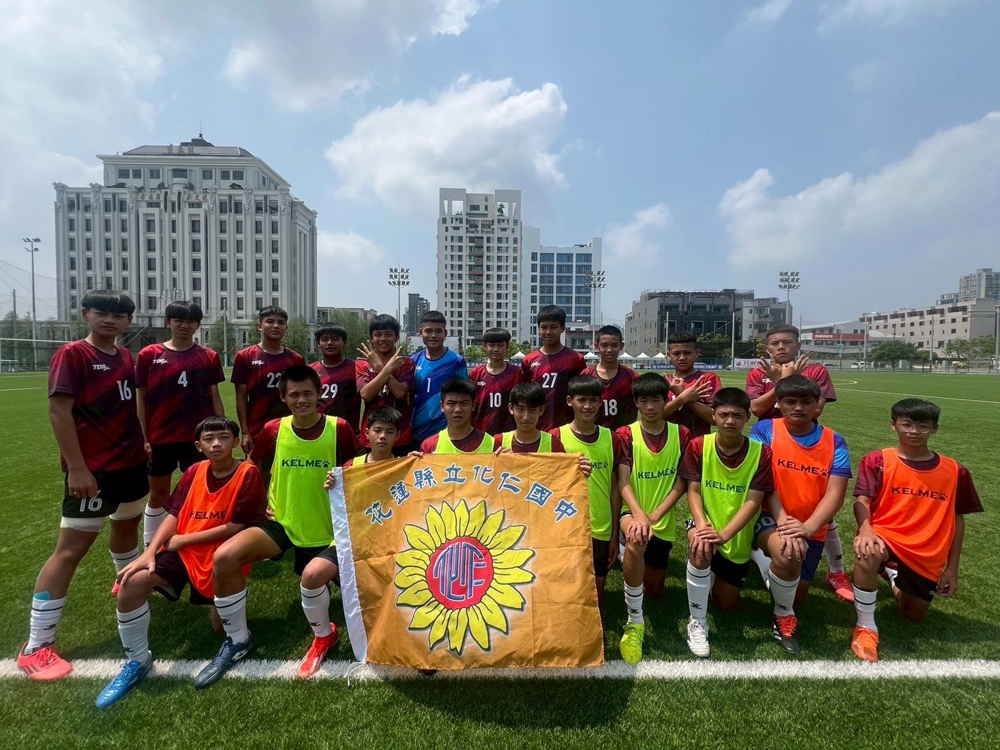
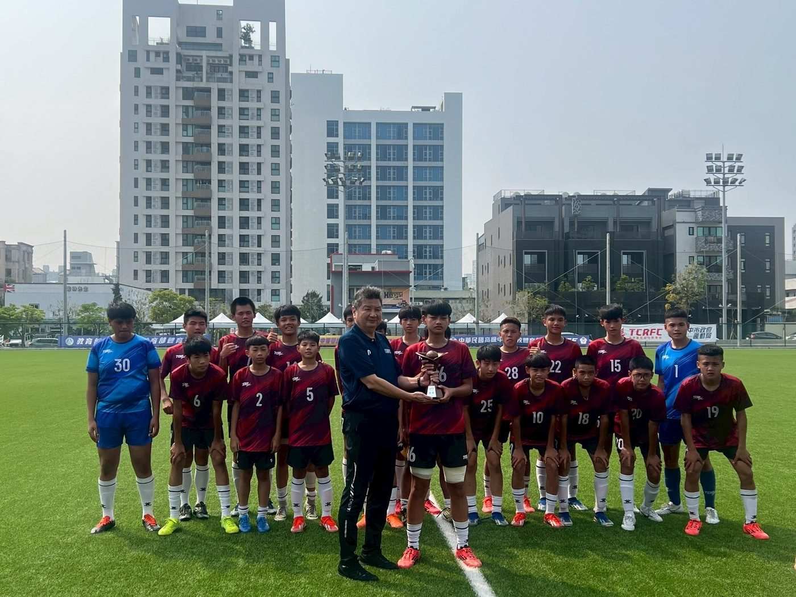
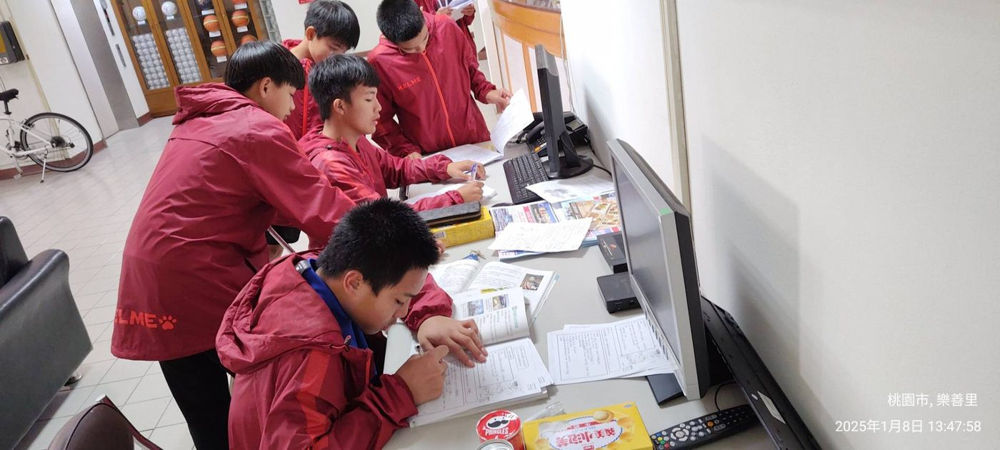

01我的故事
花蓮化仁國中足球隊
本校足球隊，於九十六學年度重新成軍至今，長年不萎的推動。在吳政和教師、擔任
指導教練下，在全國青少年組足壇上屢次展露頭角為校爭光，至今也已培養出不少國家代表隊成員。
近年來由於政府極力推廣足球運動，在教學中也增加新進教練卓莉萍(國家代表隊成員)雖熱忱指導，但因種種訓練器具的不足及移地訓練經費的籌措不易，導致目前球隊難以表現。期望能有機會獲得相關補助，促使本校足球隊能持續發展，並能延續將選手推向三級花蓮農校足球隊，繼續接受其專業訓練，期望未來能為自己爭取榮耀，延續為校為國爭光。



推薦理由
讓球隊穩定發展並支持參賽計劃，我們需要尋求額外的經費支持，讓更多學生能參與足球運動、獲得培訓資源，提升學生的足球技能，還將在多個層面帶來長遠而積極的影響並在參賽過程中無後顧之憂。